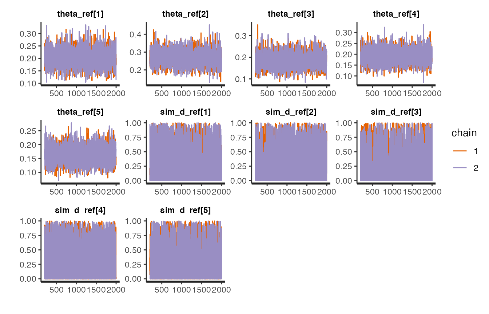
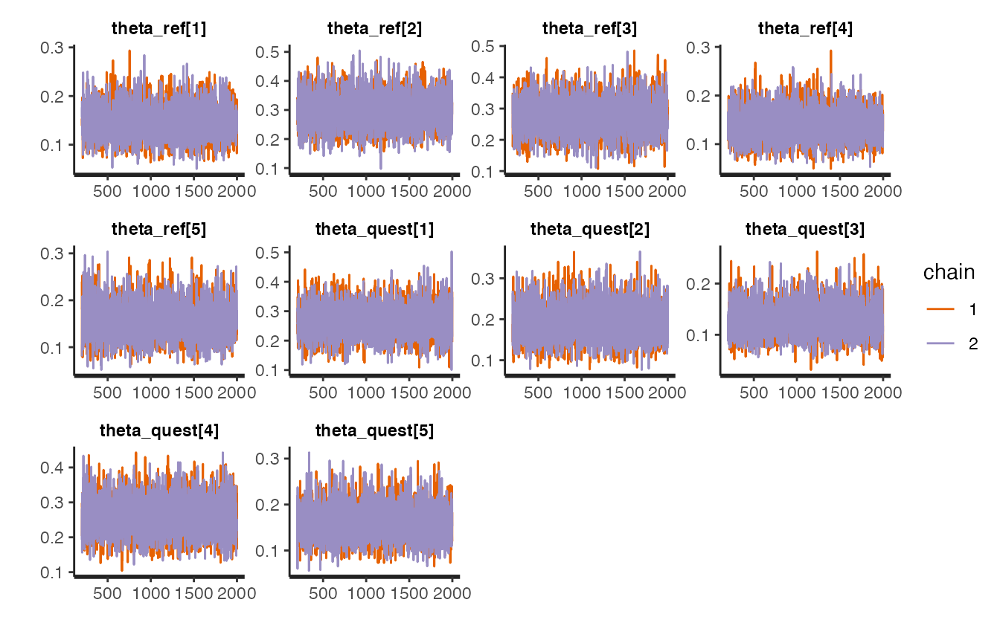
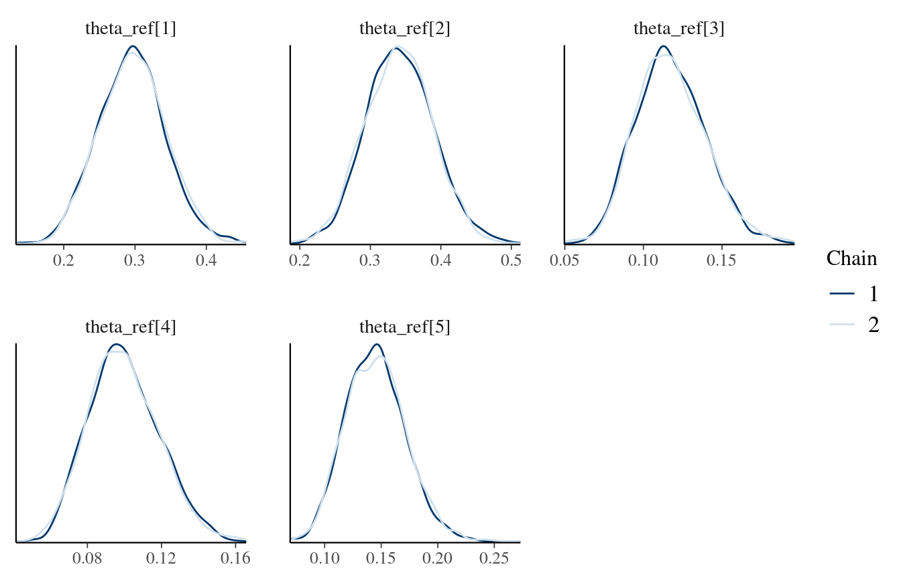
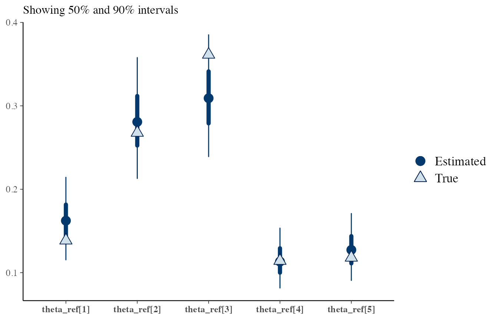

introduction.RmdThis vignette introduces the package.
Let’s first create some data.
We will use the package rsamplestudy to generate a population and to extract the reference/questioned samples.
Here, we will be generating data from a “Dirichlet-Dirichlet” model.
Note that this has nothing to do with the models implemented in this package.
library(rstanBF)
#> Loading required package: Rcpp
library(dplyr)
#>
#> Attaching package: 'dplyr'
#> The following objects are masked from 'package:stats':
#>
#> filter, lag
#> The following objects are masked from 'package:base':
#>
#> intersect, setdiff, setequal, union
library(rsamplestudy)
# set.seed(123)
p <- 5
n <- 100
m <- 10
alpha <- rep(p, p)
list_pop <- rsamplestudy::fun_rdirichlet_population(n, m, p, alpha = alpha)
list_pop
#> $alpha
#> [1] 5 5 5 5 5
#>
#> $df_sources
#> # A tibble: 10 x 6
#> source `theta[1]` `theta[2]` `theta[3]` `theta[4]` `theta[5]`
#> <int> <dbl> <dbl> <dbl> <dbl> <dbl>
#> 1 1 0.265 0.262 0.0858 0.0836 0.304
#> 2 2 0.0917 0.0679 0.493 0.145 0.202
#> 3 3 0.132 0.108 0.207 0.250 0.303
#> 4 4 0.206 0.0706 0.326 0.146 0.251
#> 5 5 0.167 0.216 0.174 0.241 0.203
#> 6 6 0.150 0.0830 0.267 0.368 0.132
#> 7 7 0.153 0.210 0.232 0.259 0.145
#> 8 8 0.254 0.408 0.0915 0.105 0.141
#> 9 9 0.162 0.127 0.264 0.281 0.165
#> 10 10 0.138 0.163 0.135 0.360 0.204
#>
#> $df_pop
#> # A tibble: 1,000 x 6
#> source `x[1]` `x[2]` `x[3]` `x[4]` `x[5]`
#> <int> <dbl> <dbl> <dbl> <dbl> <dbl>
#> 1 1 0.0370 0.0218 1.49e-13 8.42e- 1 0.0989
#> 2 1 0.222 0.696 1.19e-19 8.19e- 2 0.000660
#> 3 1 0.438 0.560 4.60e- 7 1.45e- 3 0.000135
#> 4 1 0.115 0.448 2.90e- 1 7.50e- 3 0.140
#> 5 1 0.0103 0.782 6.18e- 3 1.61e-19 0.201
#> 6 1 0.165 0.00843 1.28e- 3 4.18e-15 0.826
#> 7 1 0.00394 0.0151 9.57e- 1 8.30e- 4 0.0231
#> 8 1 0.802 0.00848 3.85e-10 9.67e- 6 0.190
#> 9 1 0.181 0.699 4.23e- 2 1.27e- 4 0.0778
#> 10 1 0.000146 0.987 2.12e- 4 3.34e-11 0.0128
#> # … with 990 more rows
#>
#> $names_var
#> [1] "x[1]" "x[2]" "x[3]" "x[4]" "x[5]"
#>
#> $names_source
#> [1] "theta[1]" "theta[2]" "theta[3]" "theta[4]" "theta[5]"The package compares two sets of items (reference and questioned) and evaluates their support to a pair of hypotheses.
We simulate a situation using the function make_dataset_splits from the package rsamplestudy:
k_ref <- 10
k_quest <- 10
# We sample from all sources
sources <- unique(list_pop$df_pop$source)
list_samples_diff <- list_pop$df_pop %>% rsamplestudy::make_dataset_splits(k_ref, k_quest)
source_same <- unique(list_samples_diff$df_reference$source)
list_samples_same <- list_pop$df_pop %>% rsamplestudy::make_dataset_splits(k_ref, k_quest, source_ref = source_same, source_quest = source_same)
list_samples_H <- list(H1 = list_samples_same, H2 = list_samples_diff)These need to be converted to a friendly format (matrices and lists) from rsamplestudy output:
list_data_diff <- stanBF_prepare_rsamplestudy_data(list_pop, list_samples_diff)
list_data_same <- stanBF_prepare_rsamplestudy_data(list_pop, list_samples_same)We see that each list contains the full set of observations, the set of indexes to reference items, and the set of indexes to the questioned items:
str(list_data_diff)
#> List of 3
#> $ mtx : num [1:1000, 1:5] 0.037 0.2216 0.4384 0.1153 0.0103 ...
#> ..- attr(*, "dimnames")=List of 2
#> .. ..$ : NULL
#> .. ..$ : chr [1:5] "x[1]" "x[2]" "x[3]" "x[4]" ...
#> $ idx.ref : int [1:10] 713 723 729 733 739 756 757 758 775 799
#> $ idx.quest: int [1:10] 49 52 64 100 219 295 384 481 683 978From now on, we are ready to use the rstanBF package.
The package supports several models, identified by their short names:
More details are also available in data frame form:
df_models <- available_models(verbose = TRUE)
df_models
#> # A tibble: 4 x 5
#> short_name long_name S3_class hyperpriors source_files
#> <chr> <chr> <chr> <list> <list>
#> 1 DirDir Dirichlet-Dirichlet stanBF_turn <chr [1]> <chr [2]>
#> 2 DirFNorm Dirichlet-FoldedNormal stanBF_turn <chr [2]> <chr [2]>
#> 3 DirDirGamma Dirichlet-DirichletGamma stanBF_turn <chr [3]> <chr [2]>
#> 4 NormNorm Normal-Normal NULL <chr [4]> <chr [2]>and also in text form:
available_models(verbose = TRUE, do_print = TRUE)
#> Model: "DirDir"
#> Long name: "Dirichlet-Dirichlet"
#> Hyperparameters: alpha
#>
#> Model: "DirFNorm"
#> Long name: "Dirichlet-FoldedNormal"
#> Hyperparameters: c("mu", "sigma")
#>
#> Model: "DirDirGamma"
#> Long name: "Dirichlet-DirichletGamma"
#> Hyperparameters: c("alpha", "alpha_0", "beta_0")
#>
#> Model: "NormNorm"
#> Long name: "Normal-Normal"
#> Hyperparameters: c("mu_mu0", "mu_sigma0", "sigma_mu0", "sigma_sigma0")We choose the Dirichlet-Dirichlet model.
The only hyperparameter which must be provided is \(\alpha\), the Dirichlet parameter at the hyperprior level.
It is known since the data has been generated: let’s use it, for now.
If one wants to elicit a value for the hyperparameter(s) required by the model, the package supplies the function stanBF_elicit_hyperpriors.
See the documentation for details:
stanBF_elicit_hyperpriors(list_samples_same$df_background, model, mode_hyperparameter = 'ML', mode_ML = 'naive')
#> $alpha
#> [1] 3.698975 4.090869 5.185362 4.738075 4.479528
stanBF_elicit_hyperpriors(list_samples_same$df_background, model, mode_hyperparameter = 'ML', mode_ML = 'ML')
#> $alpha
#> [1] 5.425624 5.593108 6.865328 6.507833 6.465677Compare the estimate with the generating value:
\(\alpha = \left( 5,5,5,5,5 \right)\)
We need to set up the HMC parameters, first:
Now we are ready! Let’s sample:
stanBF_obj_same <- rstanBF::compute_BF_Stan(list_data_same, model, list_hyperpriors, data_other = NULL, n.iter, n.burnin, n.chains, n.cores, silent = TRUE)
stanBF_obj_diff <- rstanBF::compute_BF_Stan(list_data_diff, model, list_hyperpriors, data_other = NULL, n.iter, n.burnin, n.chains, n.cores, silent = TRUE)stanBF_obj_same
#> stanBF object containing posterior samples from H1, H2.
#> Model: Dirichlet-Dirichlet
#> Obtained BF: 20.12459
#> Ran with 2 chains, 2000 HMC iterations.
stanBF_obj_diff
#> stanBF object containing posterior samples from H1, H2.
#> Model: Dirichlet-Dirichlet
#> Obtained BF: 0.1267064
#> Ran with 2 chains, 2000 HMC iterations.rstanBF objects contain stanfit objects (one under \(H_1\), one under \(H_2\)), which are actually the outputs of Stan sampling procedure.
They are available under the stanfit property:
One can either further process them using standard tools (rstan post-processing functions, coda, etc.), or use the supplied functions in the package.
These functions usually do different things depending on the model (e.g. often only the likelihood).
What follows must be implemented for each model.
For now, only stanBF_turn models are completely specified.
Returned objects often implement a samples method to extract samples from the interesting posteriors:
head(rstanBF::samples(stanBF_obj_same))
#> # A tibble: 6 x 13
#> Iteration Hypothesis Source `theta[1]` `theta[2]` `theta[3]` `theta[4]`
#> <int> <chr> <chr> <dbl> <dbl> <dbl> <dbl>
#> 1 1 Hp Both 0.256 0.348 0.112 0.108
#> 2 2 Hp Both 0.226 0.361 0.117 0.118
#> 3 3 Hp Both 0.251 0.369 0.141 0.112
#> 4 4 Hp Both 0.213 0.364 0.153 0.100
#> 5 5 Hp Both 0.276 0.316 0.133 0.115
#> 6 6 Hp Both 0.213 0.458 0.110 0.0967
#> # … with 6 more variables: `theta[5]` <dbl>, `rho[1]` <dbl>,
#> # `rho[2]` <dbl>, `rho[3]` <dbl>, `rho[4]` <dbl>, `rho[5]` <dbl>
head(rstanBF::samples(stanBF_obj_diff))
#> # A tibble: 6 x 13
#> Iteration Hypothesis Source `theta[1]` `theta[2]` `theta[3]` `theta[4]`
#> <int> <chr> <chr> <dbl> <dbl> <dbl> <dbl>
#> 1 1 Hp Both 0.239 0.258 0.165 0.0910
#> 2 2 Hp Both 0.176 0.313 0.197 0.0798
#> 3 3 Hp Both 0.182 0.351 0.170 0.133
#> 4 4 Hp Both 0.205 0.272 0.173 0.119
#> 5 5 Hp Both 0.260 0.242 0.201 0.107
#> 6 6 Hp Both 0.193 0.247 0.150 0.115
#> # … with 6 more variables: `theta[5]` <dbl>, `rho[1]` <dbl>,
#> # `rho[2]` <dbl>, `rho[3]` <dbl>, `rho[4]` <dbl>, `rho[5]` <dbl>Models often implement draws from the prior and posterior predictive distributions.
Prior predictive: the names of the variables in the Stan source start with sim_.
Posterior predictive: the names of the variables in the Stan source start with pred_.
One can use the prior_pred and posterior_pred methods to extract and format them:
df_prior_pred_same <- prior_pred(stanBF_obj_same)
head(df_prior_pred_same, 20)
#> # A tibble: 20 x 7
#> `x[1]` `x[2]` `x[3]` `x[4]` `x[5]` Hypothesis Source
#> <dbl> <dbl> <dbl> <dbl> <dbl> <chr> <chr>
#> 1 0.923 0.000745 3.72e- 2 3.85e- 2 0.00000523 Hp Both
#> 2 0.00379 0.241 5.97e- 1 9.22e- 3 0.149 Hp Both
#> 3 0.0112 0.0251 9.60e- 1 1.75e- 3 0.00177 Hp Both
#> 4 0.0677 0.0479 8.11e- 1 6.81e- 2 0.00490 Hp Both
#> 5 0.333 0.366 9.61e- 7 2.54e- 3 0.299 Hp Both
#> 6 0.0000348 0.177 4.24e- 1 3.13e- 1 0.0861 Hp Both
#> 7 0.794 0.0675 2.23e- 4 1.38e- 1 0.000134 Hp Both
#> 8 0.00187 0.000129 9.62e- 1 8.48e- 3 0.0280 Hp Both
#> 9 0.00405 0.522 5.39e- 2 4.20e- 1 0.00000998 Hp Both
#> 10 0.806 0.151 2.44e- 4 1.03e- 2 0.0323 Hp Both
#> 11 0.0406 0.000297 2.00e-14 1.55e- 4 0.959 Hp Both
#> 12 0.349 0.00161 8.61e- 3 4.45e- 1 0.196 Hp Both
#> 13 0.0583 0.294 6.20e- 1 1.67e- 2 0.0106 Hp Both
#> 14 0.0281 0.00000182 1.35e- 2 2.86e- 2 0.930 Hp Both
#> 15 0.227 0.0000243 3.61e- 2 3.76e- 1 0.361 Hp Both
#> 16 0.0000000433 0.640 3.05e- 1 4.89e- 2 0.00574 Hp Both
#> 17 0.00000944 0.000389 4.86e- 2 3.56e- 3 0.947 Hp Both
#> 18 0.189 0.000288 4.81e- 1 5.08e- 6 0.329 Hp Both
#> 19 0.106 0.000373 3.41e- 7 8.91e- 1 0.00177 Hp Both
#> 20 0.338 0.192 1.55e- 3 4.92e-14 0.468 Hp BothThis is interpreted as an example of a dataset, generated according to the model, before having observed any data.
They can be used to assess if the specified hyperparameters are too restrictive or too wide.
df_posterior_pred_same <- posterior_pred(stanBF_obj_same)
head(df_posterior_pred_same, 20)
#> # A tibble: 20 x 7
#> `x[1]` `x[2]` `x[3]` `x[4]` `x[5]` Hypothesis Source
#> <dbl> <dbl> <dbl> <dbl> <dbl> <chr> <chr>
#> 1 0.638 0.326 0.00000753 1.47e- 6 3.61e- 2 Hp Both
#> 2 0.0141 0.0198 0.891 1.16e- 2 6.30e- 2 Hp Both
#> 3 0.903 0.00701 0.0208 1.27e- 4 6.95e- 2 Hp Both
#> 4 0.834 0.131 0.0267 6.42e- 5 8.44e- 3 Hp Both
#> 5 0.979 0.000154 0.000494 1.05e- 3 1.91e- 2 Hp Both
#> 6 0.262 0.637 0.000114 2.64e-13 1.02e- 1 Hp Both
#> 7 0.00994 0.845 0.144 8.54e- 4 3.57e- 6 Hp Both
#> 8 0.00177 0.926 0.0592 2.70e- 9 1.26e- 2 Hp Both
#> 9 0.0000173 0.906 0.00000125 9.39e- 2 4.16e- 6 Hp Both
#> 10 0.0292 0.00266 0.00262 8.82e- 1 8.37e- 2 Hp Both
#> 11 0.00000800 0.0000642 0.0314 9.57e- 1 1.13e- 2 Hp Both
#> 12 0.000000433 0.595 0.0153 2.30e- 7 3.90e- 1 Hp Both
#> 13 0.0295 0.346 0.368 4.33e- 2 2.13e- 1 Hp Both
#> 14 0.000105 0.469 0.000105 9.61e- 4 5.30e- 1 Hp Both
#> 15 0.0000101 0.999 0.00000904 4.13e- 8 1.11e- 3 Hp Both
#> 16 0.0464 0.712 0.0000354 6.03e- 5 2.42e- 1 Hp Both
#> 17 0.0538 0.684 0.262 1.41e- 4 8.61e-11 Hp Both
#> 18 0.0555 0.913 0.000000363 3.18e- 2 1.76e-13 Hp Both
#> 19 0.670 0.0196 0.308 4.97e- 5 2.00e- 3 Hp Both
#> 20 0.00266 0.792 0.140 6.55e- 2 9.95e-13 Hp Bothstanfit objects implement several plotting functions (see here for a reference).
For example, traceplots:
# A stanfit object
# stanBF_obj_same$stanfit$H1
# Plot using all params
stanBF_obj_diff$stanfit$H1 %>% rstan::stan_trace()
#> 'pars' not specified. Showing first 10 parameters by default.
stanBF_obj_diff$stanfit$H2 %>% rstan::stan_trace()
#> 'pars' not specified. Showing first 10 parameters by default.
The popular bayesplot package can be used to produce plots to assess convergence of the MCMC chains. It includes an interface to stanfit objects, returned by rstan.
It is easy to use bayesplot with this package. One must first extract all MCMC samples using the rstan tools:
library(bayesplot)
#> This is bayesplot version 1.6.0
#> - Online documentation and vignettes at mc-stan.org/bayesplot
#> - bayesplot theme set to bayesplot::theme_default()
#> * Does _not_ affect other ggplot2 plots
#> * See ?bayesplot_theme_set for details on theme setting
# A stanfit object
# stanBF_obj_same$stanfit$H1
# All variables except the logPosterior
all_vars_no_lp <- setdiff(names(stanBF_obj_same$stanfit$H2), 'lp__')
all_vars_no_lp
#> [1] "theta_ref[1]" "theta_ref[2]" "theta_ref[3]"
#> [4] "theta_ref[4]" "theta_ref[5]" "theta_quest[1]"
#> [7] "theta_quest[2]" "theta_quest[3]" "theta_quest[4]"
#> [10] "theta_quest[5]" "sim_d_ref[1]" "sim_d_ref[2]"
#> [13] "sim_d_ref[3]" "sim_d_ref[4]" "sim_d_ref[5]"
#> [16] "sim_d_quest[1]" "sim_d_quest[2]" "sim_d_quest[3]"
#> [19] "sim_d_quest[4]" "sim_d_quest[5]" "sim_theta_ref[1]"
#> [22] "sim_theta_ref[2]" "sim_theta_ref[3]" "sim_theta_ref[4]"
#> [25] "sim_theta_ref[5]" "sim_theta_quest[1]" "sim_theta_quest[2]"
#> [28] "sim_theta_quest[3]" "sim_theta_quest[4]" "sim_theta_quest[5]"
#> [31] "pred_d_ref[1]" "pred_d_ref[2]" "pred_d_ref[3]"
#> [34] "pred_d_ref[4]" "pred_d_ref[5]" "pred_d_quest[1]"
#> [37] "pred_d_quest[2]" "pred_d_quest[3]" "pred_d_quest[4]"
#> [40] "pred_d_quest[5]"
outputs_H1 <- stanBF_obj_same$stanfit$H1 %>% rstan::As.mcmc.list()
outputs_H2 <- stanBF_obj_same$stanfit$H2 %>% rstan::As.mcmc.list()
# Equivalent:
# outputs_H1 <- stanBF_obj_same$stanfit$H1 %>% rstan::extract(pars = all_vars_no_lp)
# outputs_H2 <- stanBF_obj_same$stanfit$H2 %>% rstan::extract(pars = all_vars_no_lp)Then, one can use bayesplot methods. (see the documentation)
As an example, we can plot the posterior densities across MCMC chains, selecting only the theta_ref parameters:
# Density across chains
# use a regular expression to subset the interesting variables
outputs_H1 %>% bayesplot::mcmc_dens_overlay(regex_pars = '^theta_ref')
bayesplot contains methods to overlay generating values to posterior distributions.
Let’s try for \(\boldsymbol{\theta_i}\) (see the Dirichlet-Dirichlet model vignette).
Using data generated under \(H_1\):
# Collect the true values
df_source_same <- list_pop$df_sources %>% filter(source == source_same) %>% select(-source)
df_source_same
#> # A tibble: 1 x 5
#> `theta[1]` `theta[2]` `theta[3]` `theta[4]` `theta[5]`
#> <dbl> <dbl> <dbl> <dbl> <dbl>
#> 1 0.254 0.408 0.0915 0.105 0.141
true_vals <- as.numeric(df_source_same)
draws_same <- stanBF_obj_same$stanfit$H1 %>%
as.matrix(pars = 'theta_ref')
bayesplot::mcmc_recover_intervals(draws_same, true_vals)